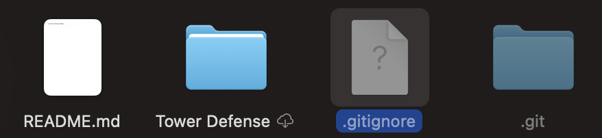
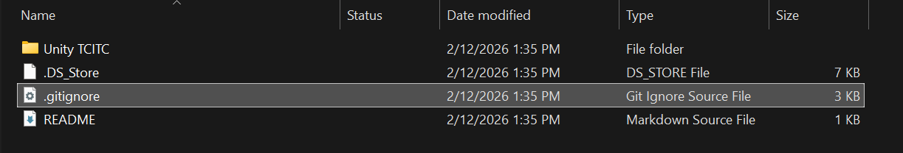
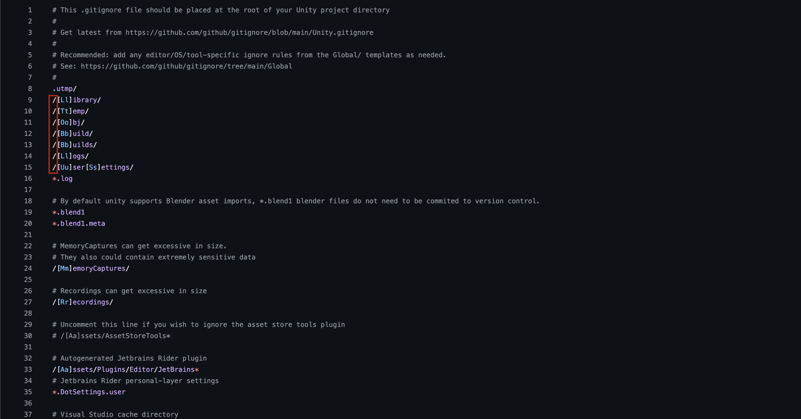

Project Setup
- Go to GitHub and make an account
- Make a repository
- Click "Code" and copy HTTPS
- Add the Unity gitignore
- Download GitHub Desktop and sign in
- Click "Clone Repository" or go to the top and click "File" → "Clone Repository"
- Click "URL" or Choose a repository to clone
- Paste the HTTPS link
- Choose a folder
- Click "Clone"
- Go to the file location and open the gitignore (if your on MacOS you need to press
CMD + Shift + .


- Remove the slashes from the first few lines
- Save

- Download Unity
- Click "Installs" → "Install Editor" and download the latest version
- Create a project
- Choose the project location to be inside of the cloned repository folder
Pushing / Pulling from GitHub
- After making changes, save them
- Open GitHub Desktop
- Click "Fetch Origin"
- Add a "Commit" (Summary) message, and click "Commit _ files to main"
- Then click "Push Origin"